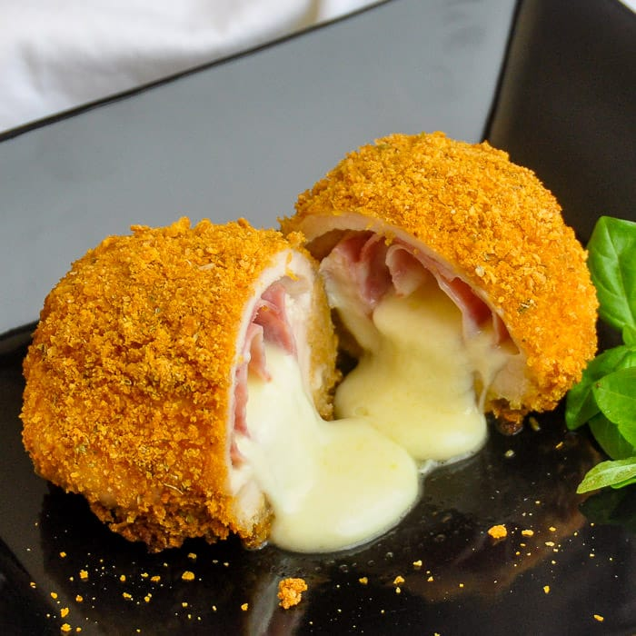

Cordon Bleu

Chicken Cordon Bleu in the Air Fryer
Chicken Cordon Bleu in the air fryer? Why yes, please! Try steamed broccoli, mashed potatoes, and a nice crusty
bread with these delicious packages of breaded chicken, ham, and Swiss cheese.
Ingredients
- 4 (5 ounce) skinless, boneless chicken breast halves
- 2 slices deli ham
- 2 slices deli Swiss cheese
- ¼ cup all-purpose flour
- ½ teaspoon salt, or to taste
- ¼ teaspoon ground black pepper
- 1 large egg, lightly beaten
- ⅔ cup plain dry bread crumbs
- 3 tablespoons unsalted butter, melted
Steps
- Place each chicken breast on a cutting board between 2 pieces of parchment paper. Being careful not to pound
all the way through, use a mallet or a foil-wrapped brick to flatten each breast to a thickness of 1/4 inch.
- Cut ham and Swiss cheese slices in half so you have 4 pieces of each. Stack 1 piece ham and 1 piece of
cheese in the middle of each flattened chicken breast. Roll up like a jelly roll, tucking the ham and cheese
inside the breast as you roll. Secure the ends and sides with toothpicks so the cheese won't run out.
Transfer to the refrigerator for at least 15 minutes, or up to 4 hours.
- Preheat an air fryer to 350 degrees F (175 degrees C), if recommended by the manufacturer.
- Combine flour, salt, and pepper in a small bowl. Place beaten egg in second bowl. Place bread crumbs in a
third bowl.
- Dip each chicken bundle in flour mixture, then in egg, and finally in bread crumbs to coat. If you notice
any spots that are just coated in flour, lightly pat with beaten egg and bread crumbs. Gently pat each
bundle with melted butter and place in the air fryer basket.
- Air-fry until crust is nicely browned and chicken is no longer pink in the center and the juices run clear,
about 20 minutes. An instant-read thermometer inserted into the center should read at least 165 degrees F
(74 degrees C).